A filtração seletiva é homeostasia. O glomérulo deixa passar água e
pequenas moléculas (escórias) e retém as proteínas do plasma. Faz isso com três camadas em série, todas
negativamente carregadas. As Fig. 1–13 voltam no Caso, na Trilha e na Avaliação (algumas reaparecem nos
exercícios). Atribuição em CREDITS.md (em curadoria).
O sangue chega ao tufo de capilares; o filtrado atravessa a parede e cai no espaço de Bowman. Entre o sangue e a urina há três peneiras em série.
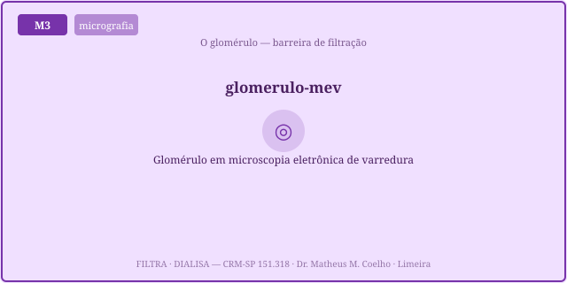
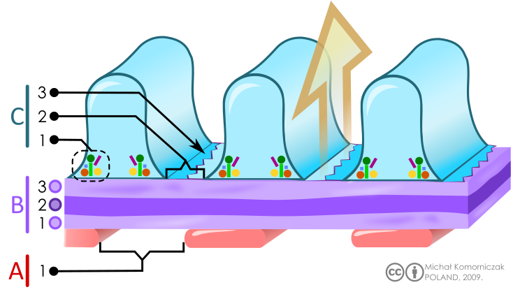
① endotélio fenestrado (fenestras grandes, barram só células) · ② membrana basal (MBG) (colágeno IV + heparan-sulfato aniônico) · ③ podócitos com o diafragma de fenda (nefrina/podocina) — a peneira mais fina.
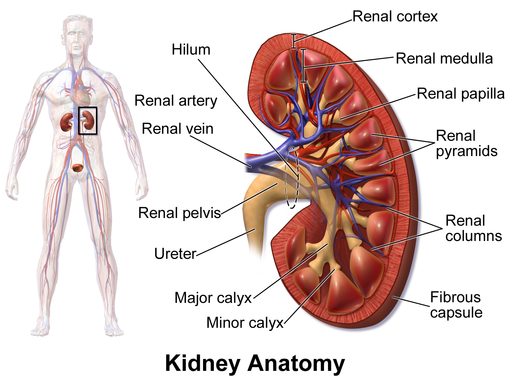
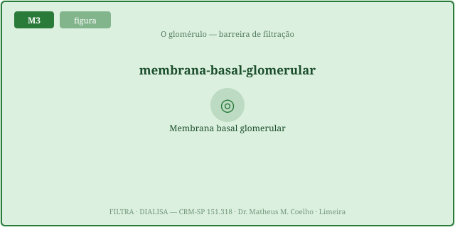
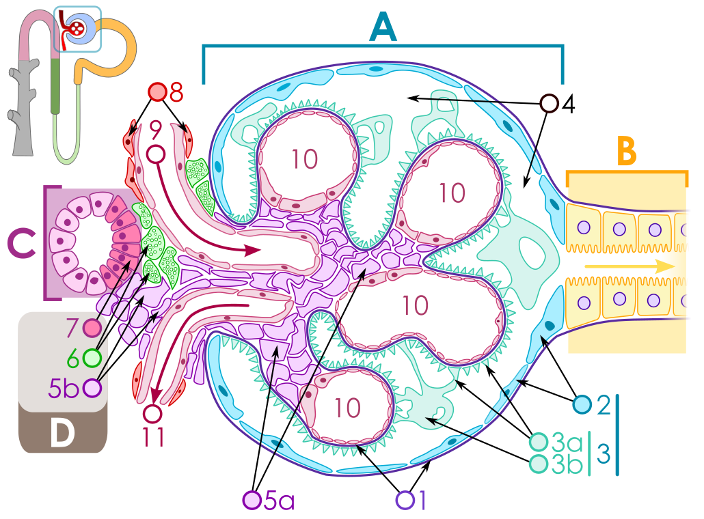
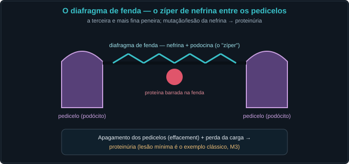
Uma molécula passa se for pequena o bastante (poro) e não for repelida pela carga. O albumina (36 Å, aniônico) é barrado sobretudo pela carga; a IgG (55 Å), pelo tamanho.
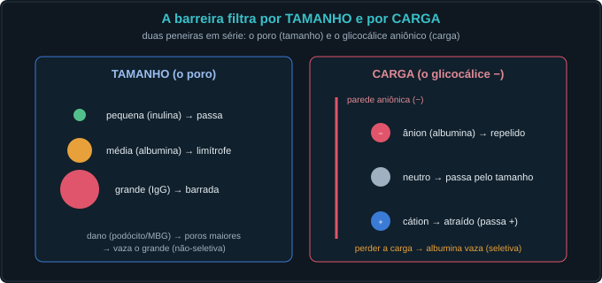
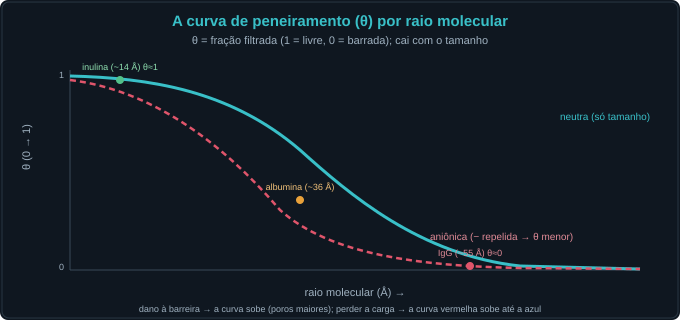
Além das três pressões (M1), a TFG depende do Kf = permeabilidade × superfície. Lesões que reduzem a área (mesângio, crescentes, perda de néfrons) derrubam a TFG sem mexer nas pressões.
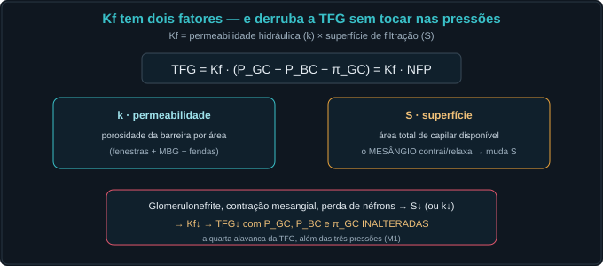
A mesma "proteína na urina" tem origens distintas: glomerular (a barreira vaza — seletiva por carga ou não-seletiva por tamanho), tubular (o túbulo não reabsorve) e overflow (excesso no plasma satura a reabsorção). Decompor antes de interpretar.
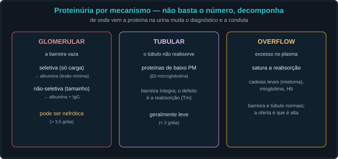
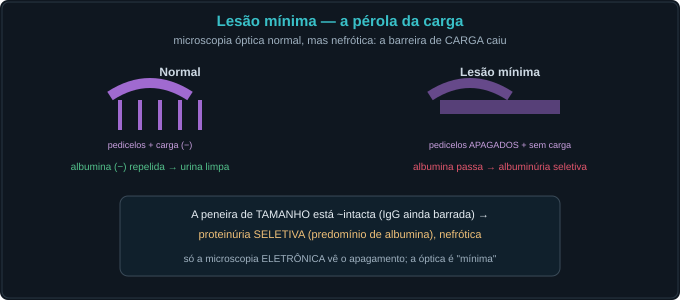
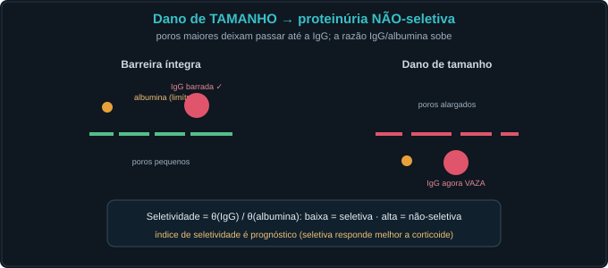
Quando o glomérulo adoece, dois padrões: a barreira que vaza (nefrótica) e o glomérulo que inflama (nefrítica).
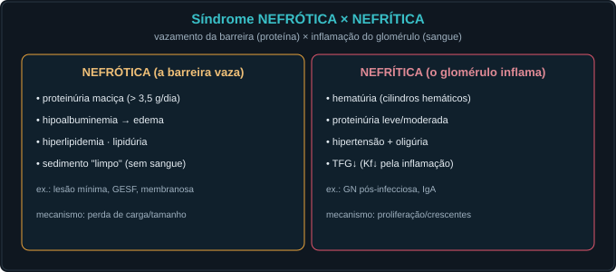
Criança de 4 anos, edema periorbital e ascite. Cada ato adiciona um dado. Preveja o mecanismo antes de abrir.
Três em série: endotélio fenestrado, membrana basal (MBG) e o diafragma de fenda dos podócitos. Todas com carga negativa.
Por tamanho (cabe no poro?) e por carga (é repelida pela parede aniônica?). Precisa passar nos dois.
A razão entre a concentração no filtrado e no plasma: θ=1 (livre, como a inulina), θ=0 (totalmente barrada, como a IgG).
Porque é aniônico e a barreira é aniônica → repulsão de carga. É barrado sobretudo pela CARGA, não só pelo tamanho.
O albumina passa a filtrar → albuminúria seletiva (a IgG, grande, ainda é barrada pelo tamanho). É a lesão mínima.
Passa até a IgG → proteinúria não-seletiva. A seletividade θ(IgG)/θ(albumina) sobe.
É prognóstica: a proteinúria seletiva (barreira de tamanho intacta) responde melhor a corticoide; a não-seletiva, pior.
O coeficiente de ultrafiltração: Kf = permeabilidade × superfície. O mesângio modula a superfície (a área).
TFG = Kf·NFP. Reduzir Kf (perda de área/néfrons, crescentes) baixa a TFG sem mexer em P_GC, P_BC ou π_GC. É a quarta alavanca.
Glomerular (barreira vaza), tubular (não reabsorve baixo PM) e overflow (excesso plasmático satura a reabsorção).
Nefrótica = a barreira vaza (proteinúria maciça, edema, sedimento limpo). Nefrítica = o glomérulo inflama (hematúria, cilindros hemáticos, HTN, TFG↓).
A fita detecta albumina, não cadeias leves. Proteinúria de overflow (cadeias leves) dá fita quase negativa com eletroforese muito positiva.
A barreira mantém o meio interno: deixa sair água e escórias e retém as proteínas (e a oncótica do plasma). Quando vaza, vem o edema — a homeostasia da pressão oncótica quebrou.
Os controles do Lab alimentam esta curva. O marcador laranja é o probe atual; o eixo y é θ (1 = livre, 0 = barrada). Mude a carga e o dano e veja a curva subir/descer.
| Variável | Atual | Normal ≈ |
|---|---|---|
| Kf (mL·min⁻¹·mmHg⁻¹) | — | 12,5 |
| NFP (mmHg) | — | 17 |
| TFG (mL/min) | — | ~125 |
| θ do probe | — | — |
| θ albumina | — | <0,01 |
| θ IgG | — | ≈0 |
| Seletividade (IgG/alb) | — | baixa |
| Proteinúria (g/dia) | — | <0,15 |
| Classe | — | normal |